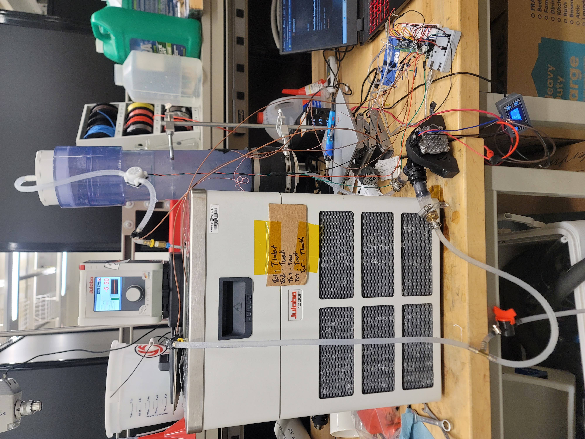
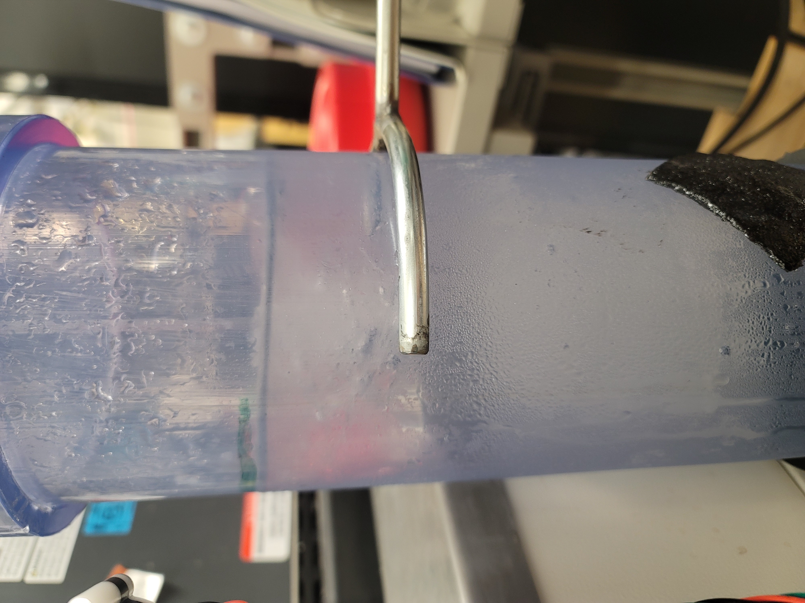
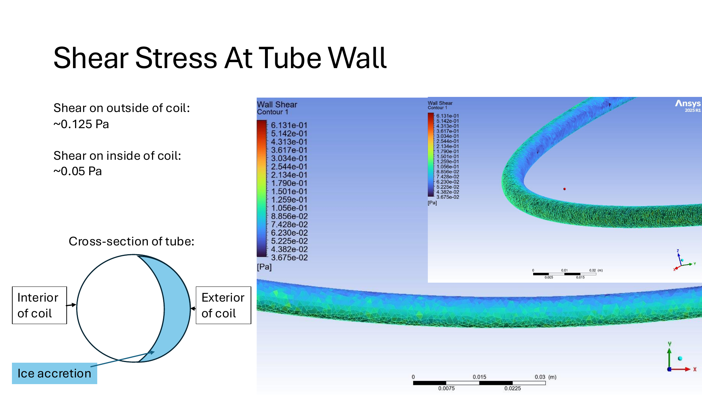
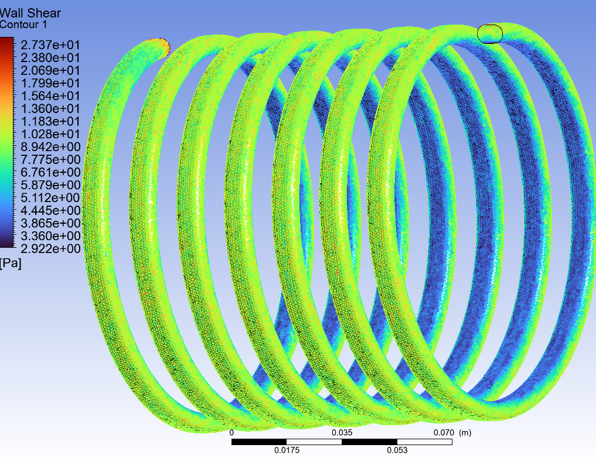
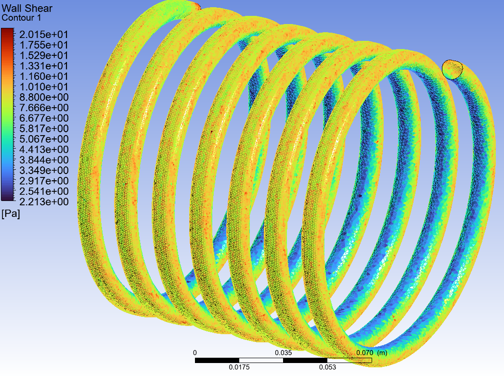
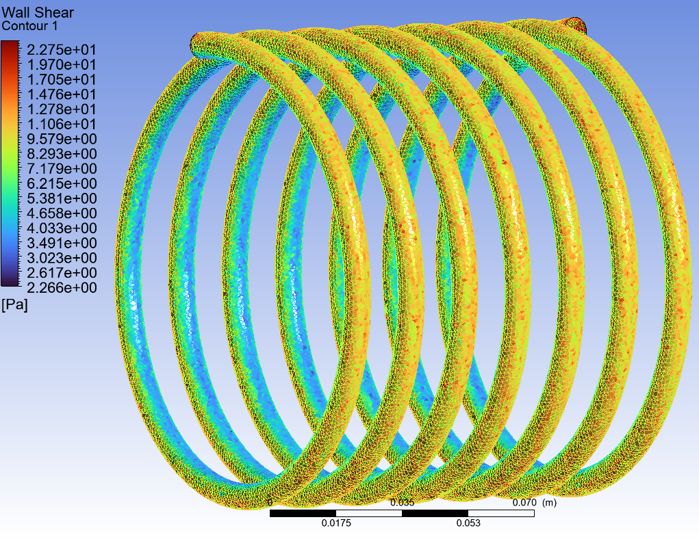
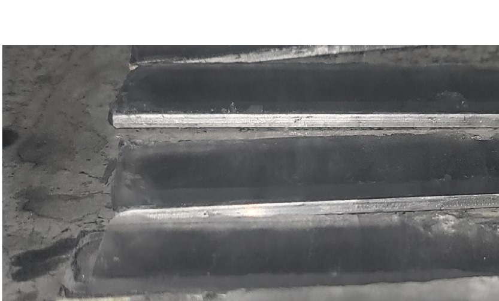
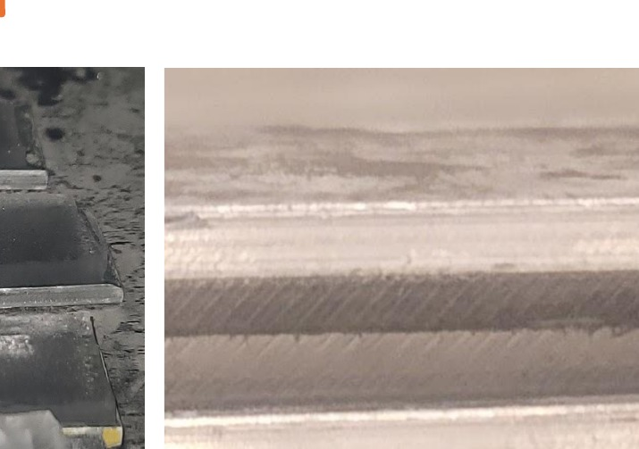
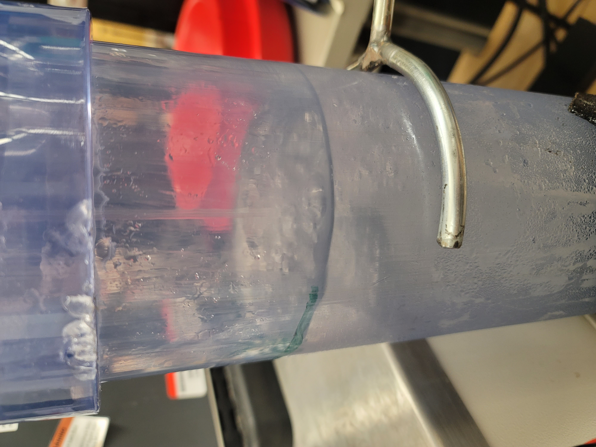

The engineering problem
Freeze desalination separates water from dissolved salts by freezing relatively pure ice and separating it from the remaining brine. The challenge is not simply creating ice—it is generating and removing ice continuously without allowing the heat exchanger to become blocked.
Previous coil-based work demonstrated the promise of ice-slurry generation but also showed a difficult operating tradeoff: conditions aggressive enough to create ice can also promote adhesion and wall growth. Aluminum improves heat transfer compared with polymer tubing, but its high thermal effectiveness makes controlled ice release even more important.
Building the proof-of-concept apparatus
The experimental loop uses a helical aluminum heat exchanger coupled to a Julabo DD1000F recirculating chiller and a vertical separation column. The system is being instrumented to track the thermal state of the loop, flow rate, and heat transfer while directly observing ice formation and transport.


Proof-of-concept apparatus demonstration. Video is included to show the physical scale and flow-loop architecture rather than to claim final desalination performance.
From preliminary CFD to deformed-cross-section analysis
ANSYS Fluent was first used to investigate flow through the helical tube and quantify the wall-shear field available to remove growing ice. The preliminary model used approximately 1.92 million elements and showed that coil curvature creates a strongly nonuniform shear environment around the tube.
In the preliminary helical-coil model, wall shear was approximately 0.125 Pa on the outside of the bend and 0.05 Pa on the inside. That difference suggested a plausible mechanism for preferential ice accumulation in lower-shear regions and motivated follow-on geometry studies.

What happens when the coil cross section deforms?
After the preliminary CFD, I performed a follow-on wall-shear analysis on the actual coil geometry to examine how a deformed or non-circular cross section changes the local shear field. This matters because manufacturing, handling, or loading can distort the tube and change the interfacial stresses available for ice removal.



Together, the preliminary and follow-on CFD results show that both global coil curvature and local cross-section deformation affect the wall-shear environment. That makes geometric fidelity important when interpreting experiments and when designing coils intended to shed ice continuously.
From coil deformation to ice detachment
Fluid shear alone may not be sufficient to remove ice reliably. I developed a scaling framework that treats the helical coil as a compliant spring and connects axial compression to local wall motion, deformation-driven shear, and tensile stress at the ice–aluminum interface.
Relates applied axial force to global coil displacement.
Compares deformation-driven shear with flow-driven wall shear.
Combines shear and tensile loading against the adhesion threshold.
Links heat removal, freezing opportunity, and detachment efficiency.
The model creates a path from first-principles mechanics to system performance: the heat exchanger must create ice, the fluid must remain in the coil long enough for freezing, and the combined deformation and fluid stresses must overcome adhesion strongly enough to transport the ice away.
Experimental failure that redirected the test method
A supporting study adapted ASTM D3433/D3762 wedge-test concepts to compare ice adhesion on aluminum surface treatments, including bare aluminum, hot-water-treated aluminum, silane-coated aluminum, and combined hot-water/silane treatment.
The initial test geometry did not isolate the ice–aluminum interface. Instead of debonding from the aluminum, specimens failed cohesively along a crystallization seam inside the ice layer. That made the result unusable for true interfacial fracture-energy measurement—but it identified a critical flaw in the experimental method.


Force the fracture to occur at the interface
Future specimens will be redesigned to suppress internal crack planes—for example by forming ice against a single adherend, controlling the freeze front, or using a bending-style release test—so that the measured failure is governed by the ice–aluminum interface rather than by the ice itself.
Custom thermal and flow data acquisition
The proof-of-concept system is supported by a custom Arduino/Python DAQ that logs multiple thermocouple channels, flow rate, heat-flux-sensor temperature, heat-flux voltage and calculated heat flux. The live logger validates incoming rows, records fault messages, writes CSV/TXT data, and displays rolling plots during experiments.
Thermal & Flow Data Acquisition System
The DAQ hardware, MAX31856 thermocouple interfaces, ADS1115 heat-flux measurement, flow sensing, live plotting, and fault-handling development are documented separately.
Tap-water proof of concept is underway
The current experimental phase uses tap water to validate the physical system before introducing salinity as another controlled variable. These runs are being used to refine cooling conditions, observe nucleation and ice transport, identify blockage behavior, and verify that the instrumentation produces reliable synchronized data.
Baseline CFD, analytical detachment scaling, apparatus construction, DAQ development, and preliminary ice-adhesion method evaluation.
Validate apparatus operation, characterize ice formation/detachment, refine operating conditions, and troubleshoot the full measurement chain.
Introduce controlled salinity and quantify salt rejection, ice production, thermal performance, and coated-versus-baseline behavior.
Connect CFD, heat transfer, ice adhesion, and coil deformation to predictive operating/design guidance for continuous slurry generation.

Salt rejection and final desalination-efficiency results are intentionally not reported yet; those measurements belong to the planned saline-water phase.